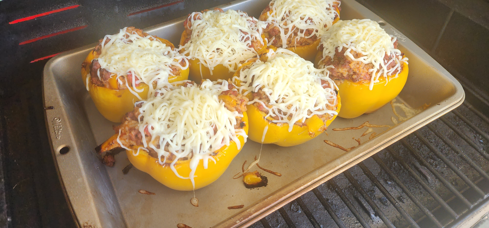

Stuffed Bell Pepper

Ingredients
For the filling:
- 2lb Ground beef or Italian pork
- 2cups cooked white rice
- 2tbs ground garlic
- 1tbs Onion powerder
- 1/2tbs salt
- 2 tbsp Italian seasoning
- 1/2tsp black pepper
- 15oz Tomatoe sauce
- 14.5oz or can diced tomatoes
Other Ingredients:
- 6 bell peppers (any color of the rainbow)
- 1cup of shreaded Mozzarella Cheese
Instructions
-
Wash the Starch off the 2 Cups of white rice. Add washed rice and 2.5
cups of water to and instantpot, Cook for 5 mins on high preasure. Allow
slow realease with keep warm off
-
Cut the tops off the bell peppers. Take the core and seeds out. Throw
away the steam and save the tops to dice and add to the stuffing.
-
Bake them for 20mins at 350. (I baked them on a campchef woodwind at
350F smoke level 10 on the bottom rack, for a hint of smokeiness.)
-
Brown the Ground beef. After meat has brown add the dice pepper topps.
- After 5mins add all the seasoning to the meat. Cook for 2mins
-
Add the tomatoe sauce and diced tomatoes. Stir and simmer for 5mins.
- Grab a large bowl to mix the rice and other stuffing together
-
Place the 6 baked peppers in 9x13 pan and fill the peppers with the
stuffing. Bake for another 10mins.
-
Add the mozzarella chees to the tops of the stuffe Peppers bake until
the cheese melts about 5ish mins.
Any left over stuffing can top some baked potatoes.
Back